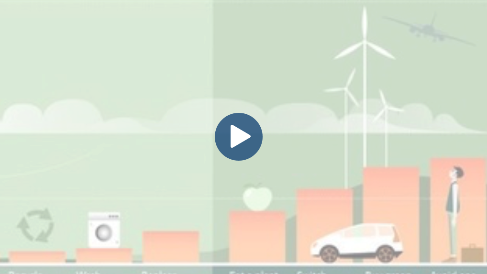
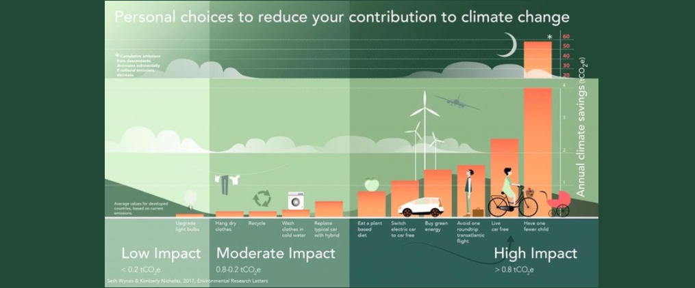

Why Flight Free?
Aviation is the fastest growing contributor to greenhouse gas emissions at a time when we desperately need to reduce them.
Although aviation currently makes up less than 10% of global emissions, this is because most people in the world cannot afford to fly (the same people who will be hit first and hardest by climate breakdown).
For those who can afford it, flying is often by far the single largest component of individual footprints. A return long-haul flight is roughly equivalent to driving for a year or eating a very meat-heavy diet. Living sustainably whilst continuing to fly is impossible.
The good news is that stopping flying is often the easiest way to make a meaningful impact on preventing climate breakdown, and there are lots of alternative ways to travel.
In Sweden, where Greta Thurnberg and youth climate protests have encouraged people to stop flying, there has already been an 8% reduction in demand for flights. When we come together, real change is possible.
Find out more in our FAQs